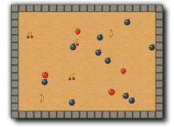

Tutorial
Page 1 of 15
Your First Game
Welcome to GameMaker. This tutorial shows you how to create your first game.
It will take just 30 minutes to complete and will teach you the important basics of GameMaker.
In the game we create, some pieces of fruit move around. The player
must click on the fruits with the mouse to collect them. For each collected fruit, points
are scored. Fast moving fruits give more points than slow fruits. And there are
bombs lying around that you should avoid. The game will look as follows:

The game will use some special resources created for this purpose. To find them on your computer, please go to the top of the GameMaker screen and select the Help
drop-down menu. You will see an option marked Open Project in explorer. If you select that then the standard file explorer will open showing the contents of you
GameMaker project directory, and there you can browse to "Assets". All resources are stored here. In the process of this tutorial you will
be reminded of this location.
Click on the Next button to go to the next page of the tutorial.